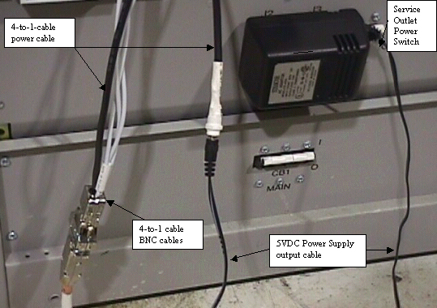
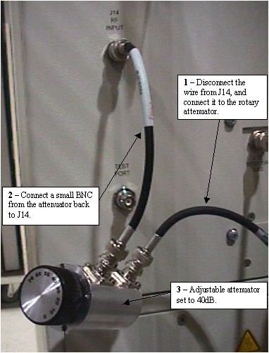
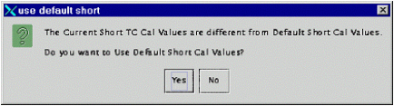
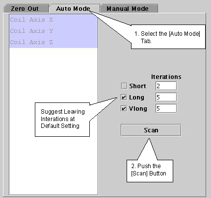
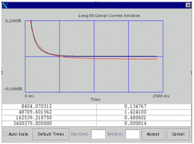

Operating Documentation
Direction 5440000, Rev# 5
Signa HDxt Service Methods
Module Version 1.0, Version Date 5/3/07
Operating Documentation |
| Required Persons | Preliminary Reqs | Procedure | Finalization |
|---|---|---|---|
| 1 | Not Applicable | 5.5 Hours for Base System, 10.5 for TWIN Gradient | “Touch up” calibrations can be completed in significantly less time depending on the number of planes adjusted. |
| Last Update | 02/06/2007 |
| Item | Qty | Effectivity | Part# | Manufacturer | |
|---|---|---|---|---|---|
| Rotary Attenuator (10db/step), | 1 | - | 46-255838P2 | - | |
| Grafidy kit - There are several variations; Verify that you have the proper kit for your magnet’s field strength. | 1 | - | 2386042 (3.0T) | - | |
| ||||
| POISON HAZARD! | ||||
| THE PHANTOM CONTAINS CUSO4. DO NOT INGEST. | ||||
| DISPOSE OF AS A HAZARDOUS WASTE ACCORDING TO STATE AND FEDERAL REGULATIONS. |
| Condition | Reference | Effectivity |
|---|---|---|
- | - | |
- | - |
Unfold the 6-coil grafidy fixture and lock the arms into place. Place the fixture at the front (Head coil end) of the MR table with the connection box away from the bore.
With the SMA to BNC cable, connect J7 on the grafidy connection MUX box to the service quick disconnect (QD box). Plug the service QD box into the system connection on the table. See Illustration 1. (Coil ID light will not come on.)
Connect one end of the (9 pin) data cable to 9 pin plug on the grafidy connection MUX box, and the other end to an open slot on the pen panel. Tighten (but don't over tighten) the retaining screws.
Illustration 1: GRAFIDY HARDWARE SETUP

Go to the equipment room side of the penetration panel, and connect the second (9-pin) data cable to the matching slot selected in the previous step. Route this cable to the front of the system cabinet.
Connect the 4-to-1-connection cable to the (9 pin) data cable routed to the system cabinet in Step 4 above. Connect the 3 BNC connections to J12, J13, and J14 on the FP I/O, as labeled on the cables.
Illustration 2: 4-TO-1 CABLE BNC CONNECTOR SETUP

Connect the output of the 5V plug-in power supply to the remaining connector on the 4-to-1-cable and plug the power supply into the outlet at the bottom of the Systems Cabinet (see Illustration 3). Verify that the Service Outlet Power Switch is “ON”.
Illustration 3: HARDWARE CABLE SETUP

Check that the system is not scanning. At the back of the RF Amp, remove the RF input cable from J14 and connect it to the variable attenuator. Connect the small BNC wire from the attenuator back to J14 (RF input). Set the attenuator to 40dB.
Illustration 4: RF ATTENUATOR CONNECTION

Return to the magnet room and center the laser crosshairs on top of the fixture. Landmark the system and press Advance to Scan.
From the Common Service Desktop, select the Calibrations tab and start the Grafidy 3 tool.
The tool will load with the [Zero Out] tab selected (see Illustration 5). The first time you run Grafidy (in both modes), you should zero out all of the values (except for the shorts.) Click the [Select All] button, and then [Zero Out Cal Values].
Illustration 5: ZEROING OLD CAL FILES

If you receive the following message about short TC Cal Values, click [Yes].
Illustration 6: DEFAULT SHORT CAL VALUES POPUP

Click on the [Auto Mode] tab. All three coil axes will be selected. Click the [Scan] button to start the calibration. (When the scan is active, you can stop it by pressing the [Abort] button.)
Illustration 7: AUTO MODE SETUP

If a component is not in spec after the maximum number of iterations you will need to use manual mode to calibrate that component. See Manual Mode.
Use Manual Mode when Auto Mode fails to bring one or more of the terms into specification. Manual Mode lets you iterate through process yourself, and decide when to stop.
Select the [Manual Mode] tab.
Illustration 8: MANUAL MODE TAB

Select the desired terms, and then press [Scan].
After the scan is complete, a graph of the results will pop up (see Illustration 9).
Illustration 9: RESULTS WINDOW WITH ACCEPT/CANCEL BUTTONS

If a “good fit” is shown (i.e. residual eddy currents are getting smaller), click the [Accept] button. The values will be saved to disk, and these values will be used in the next scan. Repeat this process by going back to Step 2.
If a “bad fit” is shown (i.e. residual eddy currents are increasing), click [Cancel]. This will leave the last accepted values in the calibration files. Do not expect any improvement on future scans when the plots diverge.
The last iteration for any component should be a check only, and you should not accept them.
Refer to Working With Grafidy 3. Or if problems are encountered, see EXCITE 3.0T Grafidy 3 Troubleshooting.
No finalization steps.